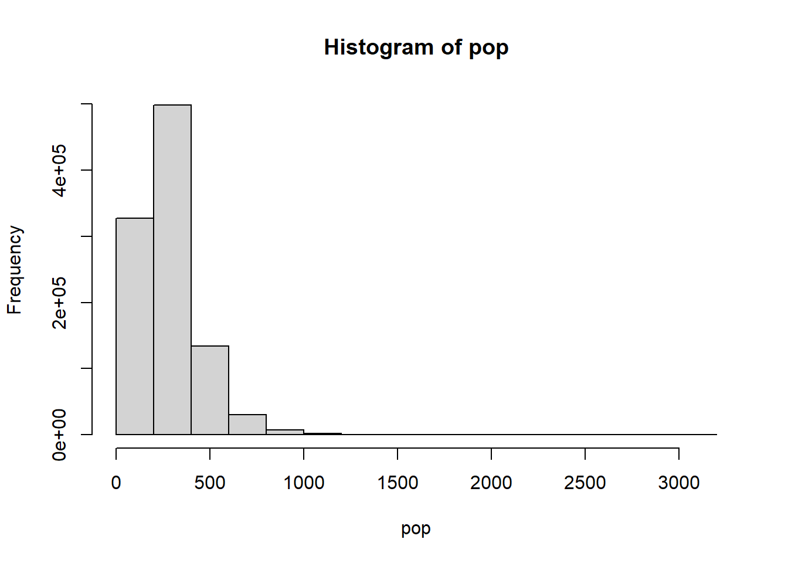

7 Hierarchical Bottom-Up Modelling Extention: the Weighted Likelihood
This section illustrates a simulation study exploring weighted Bayesian models to recover unbiased population estimates from weighted survey data.
Note: Supplementary files for this chapter can be downloaded from http://doi.org/10.5258/SOTON/WP00706.
Note: This chapter assumes familiarity with Bayesian statistical models and notation, Stan and JAGS software, and the R statistical programming language.
Introduction
Statistical models used to map estimates of population counts across the landscape require observations of population counts from a representative sample of locations to use as training data. These data usually come from household surveys in which populations are enumerated within geographically defined survey locations. A stratified random sample is ideal for recovering unbiased estimates of the mean and variance of population densities. However, national household surveys (e.g. Demographic and Health Surveys or Living Standards Measurement Surveys) often implement a PPS sampling design (Probability Proportional to Size) in which locations with higher population densities are more likely to be included in the sample compared to a random sample. This will result in biased estimates of average population densities for population modelling. Population-weighted sampling is intended to approximate random samples of individuals or households from sets of geographically clustered households, but it does not produce random samples of locations (and therefore population sizes) needed for geographical population models.
Our objectives here were to:
- Demonstrate that a population-weighted sample results in biased estimates of population densities,
- Demonstrate that model-based estimates of population totals for large areas are sensitive to this bias,
- Explore Bayesian weighted-likelihood and weighted-precision approaches to produce unbiased parameter estimates, and
- Demonstrate that weighted models can recover unbiased estimates of population densities and population totals from a population-weighted sample.
This analysis was intended as a theoretical foundation to support ongoing development of statistical models to estimate and map population sizes using weighted survey data as inputs.
Methods
We simulated populations by drawing population densities for each location from a distribution with known parameters. We then produced various types of samples from those populations: random, population-weighted, or a combination. Every population included one million locations and every sample included 2000 locations. A simulated “location” could represent a 1 hectare populated grid square. We fit three types of models to these data trying to recover the known population parameters: unweighted model, weighted-precision model, and weighted-likelihood model.
All simulations were conducted using the R statistical programming environment (R Core Team 2020a). Statistical models were fit using either the RStan R package (Stan Development Team 2020) with the Stan probabilistic programming language (Stan Development Team 2019a) or the runjags R package (Denwood 2016a) with JAGS software (Plummer 2003a).
Simulated Populations
We used a log-normal distribution to represent population densities following the population model of Leasure et al (2020d):
\[\begin{equation} N_i \sim Poisson( D_i A_i ) \\ \tag{7.1} \end{equation}\]
\[\begin{equation} \begin{split} D_i \sim LogNormal( \mu_i, \sigma_{t,g} ) \\ \mu_i = \alpha_{t,g} + \sum_{k=1}^{K} \beta_k x_{k,i} \end{split} \end{equation}\]
In this model, \(N_i\) was the observed population count and \(A_i\) was the observed settled area (ha) at location \(i\). Population densities \(D_i\) were modelled as a function of settlement types \(t\) (e.g. urban/rural), geographic units \(g\), and \(K\) geospatial covariates \(x_{k,i}\). The regression parameters \(\alpha_{t,g}\), \(\beta_k\), and \(\sigma_{t,g}\) estimated average population densities, effects of covariates, and unexplained residual variation, respectively.
The intended purpose of Eq. (7.1) was to estimate model parameters based on observed population data. For the purposes of the current simulation study, we reversed that logic. We provided pre-defined parameter values to generate simulated population data.
For our simulations we made a series of simplifying assumptions to this model. We assumed that every location \(i\) included one hectare of settled area (i.e. \(A_i = 1\)) and we ignored the Poisson variation so that \(N_i = D_i\). We also ignored the effects of settlement type \(t\), geographic location \(g\), and covariates \(x_{k,i}\) so that they were dropped from the model. These simplifying assumptions allowed us to isolate the effects of weighted sampling in the absence of these potentially confounding effects. While beyond the scope of the current report, relaxing these assumptions and assessing their effects should be the focus of future theoretical and empirical studies.
The simplified model used for our simulations was:
\[\begin{equation} D_i \sim LogNormal( log(\mu), \sigma ) \tag{7.2} \end{equation}\]
Note: We modelled the median \(\mu\) on the natural scale so that the parameter estimate was easier to interpret (i.e. average population densities), but we kept \(\sigma\) on the log-scale to simplify the equations.
We simulated population densities (i.e. count of people per hectare) at one million locations by taking one million draws from this log-normal distribution. We repeated this for a range of parameter values for \(\mu\) (i.e. 100, 250, 500) and \(\sigma\) (i.e. 0.25, 0.5, 0.75).
Following Eq. (7.2), a population where \(\mu = 250\) and \(\sigma=0.5\) can be simulated across one million locations using the following R code:
# population parameters
mu <- 250
sigma <- 0.5
# number of locations in full population
pop_n <- 1e6
# simulate population densities at all locations
pop <- rlnorm(n = pop_n,
meanlog = log(mu),
sdlog = sigma)
# plot distribution of population densities
hist(pop)
Simulated Survey Data
We simulated three sampling designs, always with a sample size of 2000 locations:
- Random sampling,
- Population-weighted sampling, and
- A combination of random and population-weighted sampling.
Random Sample
The random sample was simply drawn using the sample function to draw 2000 samples without replacement from the simulated population densities:
Population-weighted Sample
To draw a population-weighted sample, we first calculated sampling probabilities based on the population at each location. These were then used to draw a weighted (i.e. non-random) sample from the population in which locations with higher population densities were over-represented.
Note: A random sample is equivalent to a weighted sample in which all samples have equal weights.
Combined Sample
Combined samples (random and weighted) were produced using several different proportions of random samples (i.e. 0.2, 0.5, and 0.8). For example, if 20% of the 2000 sampled locations were random samples, then 80% of the 2000 sampled locations would have been weighted samples.
# proportion random
prop <- 0.5
# select locations for weighted sample
i <- sample(x = 1:pop_n,
size = n*(1-prop),
prob = w)
# select locations for random sample
j <- sample(x = (1:pop_n)[-i],
size = n*prop)
# weights for selected locations in weighted sample
w_i <- w[i]
# weights for selected locations in random sample
w_j <- rep(x = mean(w_i),
times = n*prop)
# population densities at selected locations
D <- pop[ c(i,j) ]
# weights at selected locations
w <- c(w_i, w_j)Notice that we assigned equal weights to all of the random samples that were equal to the mean weight among the weighted samples. In other words, each random sample was given an equal weight in the model comparable to an average weighted sample. This was intended to balance the influence of the random and weighted portions of the sample.
Statistical Models
We evaluated four statistical models:
- Unweighted model (Stan),
- Weighted-likelihood model (Stan),
- Weighted-precision model (Stan), and
- Weighted-precision model (JAGS).
The unweighted model was included to evaluate the bias that arises when fitting an unweighted model to population-weighted sample data. The weighted-precision and weighted-likelihood models were designed to use sample weights to recover unbiased estimates of population parameters from a weighted sample. We developed the weighted-precision model for both Stan and JAGs to demonstrate that both implementations produced the same results and to provide example code for both. The weighted-likelihood approach required a direct adjustment to the likelihood that was not possible to implement in JAGS.
All models were run with four MCMC chains including a burnin period of 1000 iterations and an additional 1000 iterations that were retained for analysis. MCMC chains for all models achieved convergence. For JAGS models, convergence was defined as Gelman-Rubin statistics (potential scale reduction factors) that were less than 1.1 for all parameters (Gelman & Rubin 1992). For Stan models, convergence was defined as R-hat less than 1.05 (Stan Development Team 2020) (https://mc-stan.org/rstan/reference/Rhat.html).
Unweighted Log-normal
Our simplest model was a log-normal with no weights:
\[\begin{equation} D_i \sim LogNormal( log(\mu), \sigma ) \tag{7.3} \end{equation}\]
Notice that this is identical to Eq. (7.2) that was used to generate our simulated populations. Our implementation used the following Stan model:
data{
int<lower=0> n; # sample size
vector<lower=0>[n] D; # observed population densities
}
parameters{
real<lower=0> mu; # median (natural)
real<lower=0> sigma; # standard deviation (log)
}
model{
D ~ lognormal(log(mu), sigma); # likelihood
mu ~ uniform(0, 2e3); # prior for mu
sigma ~ uniform(0, 5); # prior for sigma
}Weighted-likelihood
The weighted-likelihood approach used the same log-normal model but implemented a manual adjustment to the likelihood function (Stan Development Team 2019b) for each sample based on the sample weights to account for the increased probability of including locations with high population densities in the weighted sample. We implemented this model in Stan:
data{
int<lower=0> n; # sample size
vector<lower=0>[n] D; # observed population densities
vector<lower=0,upper=1>[n] w; # sampling probabilities (weights)
}
parameters{
real<lower=0> mu; # median (natural)
real<lower=0> sigma; # standard deviation (log)
}
model{
# weighted likelihood
for(i in 1:n){
target += lognormal_lpdf( D[i] | log(mu), sigma ) / w[i];
}
mu ~ uniform(0, 2e3); # prior for mu
sigma ~ uniform(0, 5); # prior for sigma
}Note: The sampling probabilities
wwere defined in the section above (see Simulated Survey Data).
In this model, the likelihood for each sample is divided by its sampling probability–the probability of a location being selected for the sample out of the one million locations in the population. This adjustment to the likelihood normalizes the influence on parameter estimates of locations that had higher sampling probabilities (i.e. locations with high population densities are over-represented in a population-weighted sample). If this model were used for a random sample, all of the weights would be equal and it would be equivalent to the unweighted model above (see Unweighted Log-normal).
Weighted-precision (Stan)
A potential alternative to the weighted-likelihood approach would be to scale the precision \(\tau\) of the log-normal using the location-specific weights \(w_i\). Precision \(\tau\) is defined as the inverse of variance \(\sigma^2\):
\[\begin{equation} \begin{split} \tau = \sigma^{-2} \\ \sigma = \tau^{-0.5} \end{split} \end{equation}\]
For this model, we define an inverse sampling weight \(m_i\) that is scaled to sum to one across all samples:
\[\begin{equation} m_i = \frac{w_i^{-1}}{\sum_{i=1}^{n}{w_i^{-1}}} \end{equation}\]
We will refer to these scaled inverse sampling weights as model weights \(m_i\). Now we can specify a weighted-precision model as:
\[\begin{equation} \begin{split} D_i \sim LogNormal(\mu_i, \tau_i^{-0.5}) \\ \tau_i = \theta^{-2} m_i \end{split} \end{equation}\]
where \(\theta^{-2}\) is a naive precision term that does not account for the model weights \(m_i\). Notice that the precision \(\tau_i\) is location-specific (i.e. indexed by \(i\)) because it has been adjusted by the model weights \(m_i\), and that \(\tau_i^{-0.5}\) is an adjusted location-specific standard deviation. Where the model weights are relatively low, the location-specific precisions \(\tau_i\) will be decreased to reduce the weight of those samples in the model. For our population-weighted sample, this reduced the weights of locations with high population densities that were over-represented in the sample.
Our goal was to recover an unbiased estimate of the standard deviation for the overall distribution of population densities among all locations in the population. So far, we have only estimated location-specific precisions \(\tau_i\) that are dependent on location-specific model weights \(m_i\). We derived the global standard deviation \(\sigma\) using a weighted average of the location-specific standard deviations \(\tau_i^{-0.5}\):
\[\begin{equation} \sigma = \frac{\sum_{i=1}^{n}{\tau_i^{-0.5} \sqrt{m_i}}} {\sum_{i=1}^{n}{\sqrt{m_i}}} \end{equation}\]
We used \(\sqrt{m_i}\) for this weighted average so that the weights are on the same scale as the standard deviations being averaged. Remember that the model weights \(m_i\) were used to adjust a naive precision parameter and so here we want to use a square root transformed weight to calculate a weighted average of standard deviations \(\tau_i^{-0.5}\).
We implemented the weighted-precision model in Stan:
data{
int<lower=0> n; # sample size
vector<lower=0>[n] D; # observed counts
vector<lower=0,upper=1>[n] w; # sampling probabilities
}
transformed data{
# model weights (scaled inverse sampling weights)
vector<lower=0,upper=1>[n] m = inv(w) ./ sum(inv(w));
}
parameters{
real<lower=0> mu; # median
real<lower=0> theta; # naive standard deviation
}
transformed parameters{
# location-specific weighted precision
vector<lower=0>[n] tau = m * pow(theta,-2);
}
model{
# likelihood with weighted precision
D ~ lognormal( log(mu), sqrt(inv(tau)) );
mu ~ uniform(0, 2e3); # prior median
theta ~ uniform(0, 1); # prior naive standard deviation
}
generated quantities {
# weighted average global sigma
real<lower=0> sigma = sum( sqrt(inv(tau)) .* sqrt(m) ) / sum( sqrt(m));
}Weighted-precision (JAGS)
We also implemented the weighted-precision model using JAGS software to provide an example of the coding differences and to demonstrate that both Stan and JAGS produce the same results. JAGS parameterizes the log-normal distribution using precision rather than the standard deviation used by Stan.
model{
# model weights (scaled inverse sampling weights)
m <- pow(w,-1) / sum(pow(w,-1))
for(i in 1:n){
# likelihood with weighted precision
D[i] ~ dlnorm(log(mu), tau[i])
# location-specific weighted precision
tau[i] <- pow(theta,-2) * m[i]
}
# prior for median
mu ~ dunif(0, 2e3)
# prior for naive standard deviation
theta ~ dunif(0, 1)
# weighted average global sigma
sigma <- sum( pow(tau,-0.5) * sqrt(m) ) / sum( sqrt(m) )
}Population Totals
We used the fitted models to estimate total population sizes for the simulated populations. This was done by producing posterior predictions for the one million locations represented in the original simulated population data (see section Simulated Populations).
\[\begin{equation} \begin{split} D_i \sim LogNormal(log(\mu), \sigma) \\ T = \sum_{i=1}^{1e6}{D_i} \end{split} \end{equation}\]
The location-specific posterior predictions for population densities \(D_i\) (i.e. people per hectare) were assumed to equal the population count \(N_i\) for each location because we assumed that each location contained one hectare of settled area \(A_i = 1\). We summed the location-specific posterior predictions for population counts across all locations to derive a posterior prediction for the total size \(T\) of the simulated population.
Results
Results presented here are based on simulated populations where \(\mu = 250\) and \(\sigma = 0.5\). For simulations that contained a combination of random and weighted samples, we used a 50/50 split (i.e. \(prop=0.5\)). We explored other combinations of parameters which produced results similar to those presented here (see supplementary files in Appendix A). Supplementary files also include source code to reproduce these results and to conduct simulations using other parameters.
The unweighted model was able to recover the simulated “true” distribution of population densities from a random sample but not from a population-weighted sample (top panels of Fig. 7.1). All three weighted models were able to recover the “true” population distribution from a population-weighted sample and a combined sample (bottom panels of Fig. 7.1). Posterior predicted distributions of population densities were very similar for all of the weighted models (Fig. 7.2).
Some important differences were apparent among the three weighted models when we looked at individual parameter estimates for the median \(\mu\), standard deviation \(\sigma\), and mean (\(\mu e^{0.5\sigma^2}\)). Most importantly, the weighted-likelihood approach produced marginal posterior distributions that were so narrow that they were essentially point-estimates that did not account for parameter uncertainty (Fig. 7.3). Although they did not adequately account for parameter uncertainty (i.e. uncertainty in statistical estimates of the mean, median, and standard deviations), the point-estimates appeared to be unbiased estimators (Tables 7.5, 7.6, and 7.7).
In contrast, the weighted-precision approaches produced full posteriors that accounted for parameter uncertainty (Fig. 7.4; Tables 7.1, 7.2, and 7.3). As expected, unweighted models that were fit to population-weighted samples significantly overestimated the median \(\mu\) and the mean (\(\mu e^{0.5\sigma^2}\)), but not the standard deviation \(\sigma\) (Fig. 7.4).
The bias in parameter estimates from an unweighted model fit to a population-weighted sample resulted in significant overestimation of the total population when the model predictions were applied across one million locations (scenario “wu” in Fig. 7.6; Table 7.4). The weighted models were all able to recover unbiased estimates of the total population, but the weighted-likelihood approach did not produce robust credible intervals (Fig. 7.5; Table 7.8). This was presumedly because of the previously mentioned issue with the weighted-likelihood failing to account for parameter uncertainty. The weighted-precision approaches produced unbiased estimators of total population and robust credible intervals (Fig. 7.6; Table 7.4).
Discussion
The results suggested that the weighted-precision model was the only approach that recovered unbiased estimates of population densities and population totals with robust credible intervals from population-weighted samples. The weighted-likelihood model recovered unbiased estimates of population densities and totals from population-weighted samples, but did not produce robust credible intervals. The unweighted model recovered unbiased estimates with robust credible intervals from random samples, but produced significantly biased estimates of population densities and totals from population-weighted samples. For these reasons, we recommend the weighted-precision model for use with population-weighted samples and we have demonstrated that the Stan and JAGS implementations of this model produced the same results.
Compared to the statistical model presented by Leasure et al (2020d), our simulation made some simplifying assumptions to isolate effects of population-weighted sample designs on these statistical models. For the simulations, we assumed that area of settlement was equal in every location and we ignored the effects of settlement type (urban/rural), geographic location, and other geospatial covariates. Exploring the effects of these factors in a simulation framework was beyond the scope of this proof-of-concept study, but we encourage further investigation using a combination of empirical and simulation-based studies.
We defined the sampling weights as the probability of a location being selected for the sample. In a random sample, those probabilities would be equal across all locations in the population. In our simulation of population-weighted sampling, we simply defined this based on the proportion of the total population that occurred in each location, and we defined locations as having equal geographic size. In practice, the sampling weights used for PPS sample designs in household surveys are often much more complicated, involving weighted selection of survey clusters from a national sampling frame followed by weighted sampling of households within the selected clusters. This presents additional challenges for weighted models using these real-world weighted survey data (Gelman 2007a). Our simulation demonstrated that the weighted models can recover unbiased parameter estimates from a population-weighted sample, but this only holds true if the available sampling weights represent the true probability of each survey cluster being selected from the national sampling frame.
Weighted-precision models were used to produce high-resolution gridded population estimates for Zambia (WorldPop 2020a) and Democratic Republic of the Congo (Boo et al. 2020a, WorldPop 2020b). These publications implemented a full version of the weighted-precision model that extended the core model of Leasure et al (2020d) from Eq. (7.1) to include a weighted-precision that accounted for population-weighted sample data while also accounting for geographical location, settlement type (urban/rural), building footprints, and other geospatial covariates.
The weighted-likelihood approach seemed to produce point-estimates rather than true Bayesian posterior distributions that accounted for paramater uncertainty (Fig. 7.3). This was presumedly the result of the direct modification of the likelihood in the Stan model (see section Weighted-likelihood). This implementation of weighted-likelihood is not advised for adjusting a log-normal distribution, but it may perform better for discrete distributions where sufficient statistics are appropriate (See “Exploiting sufficient statistics” in the “Efficiency Tuning” chapter of the Stan User Guide (2019a)). More investigation is needed on this topic to determine if this approach may be suitable for the one-inflated Poisson models (Leasure & Tatem 2020a) developed to produce full coverage gridded population estimates of people per household from census microdata (Minnesota Population Center 2019), which sometimes include weighted samples.
7.1 Contributing
This analysis and report were developed by Doug Leasure and Claire Dooley from the WorldPop Group at the University of Southampton with oversight and project support from Andy Tatem. Funding was provided by the Bill and Melinda Gates Foundation and the United Kingdom Foreign, Commonwealth & Development Office as part of the GRID3 project (OPP1182408, OPP1182425).
7.1.1 Suggested Citation
Leasure DR, Dooley CA, Tatem AJ. 2021. A simulation study exploring weighted Bayesian models to recover unbiased population estimates from weighted survey data. WorldPop, University of Southampton. doi:10.5258/SOTON/WP00706
7.1.2 License
You are free to redistribute this document under the terms of a Creative Commons Attribution-NoDerivatives 4.0 International (CC BY-ND 4.0) license.
References
Tables
Weighted-precision Model
Note: The five scenarios shown are: (pop) simulated “true” population; (ru) random sample data with an unweighted model; (wu) weighted sample data with an unweighted model; (ww) weighted sample data with a weighted-precision model; (cw) combined sample data (weighted and random) with a weighted-precision model. The “lower” and “upper” columns show 95% credible intervals.
| median | mean | lower | upper | |
|---|---|---|---|---|
| pop | 250.0 | 250.0 | 250.0 | 250.0 |
| ru | 254.0 | 254.0 | 248.4 | 259.3 |
| wu | 323.5 | 323.5 | 316.4 | 330.5 |
| ww | 254.7 | 254.7 | 249.4 | 259.9 |
| cw | 248.6 | 248.6 | 243.0 | 254.4 |
| median | mean | lower | upper | |
|---|---|---|---|---|
| pop | 283.3 | 283.3 | 283.3 | 283.3 |
| ru | 287.0 | 287.1 | 280.4 | 293.7 |
| wu | 365.6 | 365.7 | 357.4 | 374.4 |
| ww | 288.2 | 288.3 | 282.0 | 294.6 |
| cw | 285.0 | 285.0 | 278.5 | 292.0 |
| median | mean | lower | upper | |
|---|---|---|---|---|
| pop | 0.500 | 0.500 | 0.500 | 0.500 |
| ru | 0.495 | 0.495 | 0.480 | 0.511 |
| wu | 0.495 | 0.495 | 0.480 | 0.510 |
| ww | 0.498 | 0.498 | 0.482 | 0.514 |
| cw | 0.523 | 0.523 | 0.507 | 0.540 |
| median | mean | lower | upper | |
|---|---|---|---|---|
| pop | 283,246,502 | 283,246,502 | 283,246,502 | 283,246,502 |
| ru | 287,007,075 | 287,051,257 | 280,441,789 | 293,578,137 |
| wu | 365,627,317 | 365,697,914 | 357,366,590 | 374,421,369 |
| ww | 288,247,168 | 288,283,242 | 281,977,499 | 294,695,720 |
| cw | 285,019,319 | 285,030,703 | 278,418,950 | 292,024,475 |
See Fig. 7.4 for density plots of posteriors from Tables 7.1, 7.2, and 7.3; and see Fig. 7.6 for a barplot of Table 7.4.
Weighted-likelihood Model
Note: The five scenarios shown are: (pop) simulated “true” population; (ru) random sample data with an unweighted model; (wu) weighted sample data with an unweighted model; (ww) weighted sample data with a weighted-likelihood model; (cw) combined sample data (weighted and random) with a weighted-likelihood model. The “lower” and “upper” columns show 95% credible intervals.
| median | mean | lower | upper | |
|---|---|---|---|---|
| pop | 250.0 | 250.0 | 250.0 | 250.0 |
| ru | 254.0 | 254.0 | 248.4 | 259.3 |
| wu | 323.5 | 323.5 | 316.4 | 330.5 |
| ww | 254.7 | 254.7 | 254.7 | 254.7 |
| cw | 248.5 | 248.5 | 248.5 | 248.5 |
| median | mean | lower | upper | |
|---|---|---|---|---|
| pop | 283.3 | 283.3 | 283.3 | 283.3 |
| ru | 287.0 | 287.1 | 280.4 | 293.7 |
| wu | 365.6 | 365.7 | 357.4 | 374.4 |
| ww | 286.1 | 286.1 | 286.1 | 286.1 |
| cw | 283.3 | 283.3 | 283.2 | 283.3 |
| median | mean | lower | upper | |
|---|---|---|---|---|
| pop | 0.500 | 0.500 | 0.500 | 0.500 |
| ru | 0.495 | 0.495 | 0.480 | 0.511 |
| wu | 0.495 | 0.495 | 0.480 | 0.510 |
| ww | 0.483 | 0.483 | 0.483 | 0.483 |
| cw | 0.512 | 0.512 | 0.512 | 0.512 |
| median | mean | lower | upper | |
|---|---|---|---|---|
| pop | 283,246,502 | 283,246,502 | 283,246,502 | 283,246,502 |
| ru | 287,007,075 | 287,051,257 | 280,441,789 | 293,578,137 |
| wu | 365,627,317 | 365,697,914 | 357,366,590 | 374,421,369 |
| ww | 286,114,506 | 286,113,499 | 285,826,808 | 286,398,643 |
| cw | 283,260,492 | 283,258,895 | 282,950,784 | 283,558,666 |
See Fig. 7.3 for density plots of posteriors from Tables 7.5, 7.6, and 7.7; and see Fig. 7.5 for a barplot of Table 7.8.
Figures
![Posterior predicted distributions of population densities from an unweighted model and a weighted-precision model using a random sample, a population-weighted sample, and a combination sample. Dashed lines show distributions of population data from the sample of locations. Solid lines show distributions of model-based population estimates across the sample of locations. Only the weighted-precision model (Stan) results are shown here, but results were comparable with the weighted-likelihood model (Stan) and weighted-precision model (JAGS) (see supplementary files in Appendix A).](dat/weighted-likelihood/precision/distributions.jpg)
Figure 7.1: Posterior predicted distributions of population densities from an unweighted model and a weighted-precision model using a random sample, a population-weighted sample, and a combination sample. Dashed lines show distributions of population data from the sample of locations. Solid lines show distributions of model-based population estimates across the sample of locations. Only the weighted-precision model (Stan) results are shown here, but results were comparable with the weighted-likelihood model (Stan) and weighted-precision model (JAGS) (see supplementary files in Appendix A).
Figure 7.2: Posterior predicted distribution of population densities from weighted-likelihood, Stan weighted-precision, and JAGS weighted-precision models. The true population distribution includes one million locations and the weighted sample includes 2000 locations.
Figure 7.3: Parameter estimates (marginal posterior distributions) for the median, mean, and sigma from the weighted-likelihood model. The four scenarios are: (ru) random sample data with an unweighted model; (wu) weighted sample data with an unweighted model; (ww) weighted sample data with a weighted model; and (cw) combined sample data (weighted and random) with a weighted model. The vertical red line is the simulated ‘true’ parameter estimate.
Figure 7.4: Parameter estimates for the median, mean, and sigma from the weighted-precision model. The four scenarios are: (ru) random sample data with an unweighted model; (wu) weighted sample data with an unweighted model; (ww) weighted sample data with a weighted model; and (cw) combined sample data (weighted and random) with a weighted model. The vertical red line is the simulated ‘true’ parameter estimate.
Figure 7.5: Posterior predicted population totals from a weighted-likelihood model. Population totals include one million locations from the full simulated population. The four scenarios are: (ru) random sample data with an unweighted model; (wu) weighted sample data with an unweighted model; (ww) weighted sample data with a weighted model; and (cw) combined sample data (weighted and random) with a weighted model. The horizontal line is the simulated ‘true’ total population size.
Figure 7.6: Posterior predicted population totals from a weighted-precision model. Population totals include one million locations from the full simulated population. The four scenarios are: (ru) random sample data with an unweighted model; (wu) weighted sample data with an unweighted model; (ww) weighted sample data with a weighted model; and (cw) combined sample data (weighted and random) with a weighted model. The horizontal line is the simulated ‘true’ total population size.
Appendix A: Supplementary Files
All code used to conduct the simulation analyses and produce results are provided in a supplementary file that is available from http://doi.org/10.5258/SOTON/WP00706. The supplemental code can be used to replicate the results in this report and to explore different simulation settings and model designs.
The supplementary file leasure2021simulation_supplement.zip is a compressed zip archive that contains three folders: scripts, models, and output.
The output folder contains simulation results for various parameterizations not presented in the report. It has sub-folders named for the script and parameters that produced each result.
The scripts folder contains three R scripts:
1. minimum example.R - A minimum example of the simulation framework and weighted models.
2. weighted3ways.R - Evaluate all three weighted models using the same simulated sample data.
3. random + weighted.R - Compare unweighted and weighted models using random, weighted, and combined samples.
The models folder contains:
1. Unweighted model (Stan)
2. Weighted-likelihood model (Stan)
3. Weighted-precision model (Stan)
4. Weighted-precision model (JAGS)